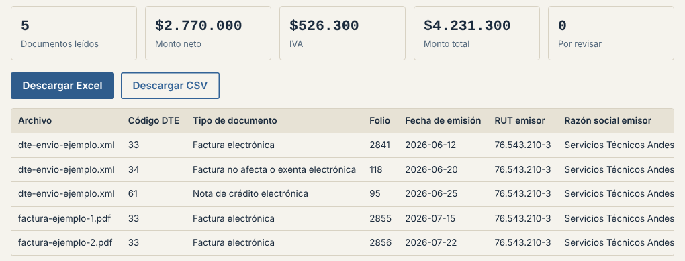

HerramientasPregúntele a sus datos
Pregúntele a sus datos: conecte sus tablas a Copilot o Gemini
Las tablas que descarga de cualquiera de las herramientas de este sitio están preparadas para que un asistente de IA las entienda. Esta guía le muestra, paso a paso, cómo hacerles preguntas en lenguaje natural —"¿qué cliente me debe más hace más de 60 días?"— con el asistente que probablemente ya tiene en su empresa.
¿Qué camino le corresponde?
Antes de empezar: descargue su tabla
Use cualquiera de las herramientas y presione "Descargar Excel"
Nuestras descargas ya cumplen lo que piden los asistentes: una sola fila de encabezados, nombres de columna únicos y descriptivos ("Fecha de emisión", "Monto total"), sin celdas combinadas, sin filas vacías y sin subtotales intercalados. Si arma su propia planilla, respete esas mismas reglas.

Botón de descarga al final de cada herramienta.
Camino A · Copilot en Excel (Microsoft 365)
Guarde el archivo en OneDrive
Abra el Excel descargado y vaya a Archivo › Guardar una copia › OneDrive. También puede arrastrarlo a su carpeta de OneDrive en el navegador.
Esquema referencial: guardar una copia en OneDrive. La pantalla real puede variar según la versión. Confirme que el Autoguardado esté activado
Arriba a la izquierda de Excel aparece el interruptor Autoguardado. Debe estar encendido.
Convierta los datos en una tabla de Excel
Haga clic en cualquier celda con datos y presione Ctrl + T (en Mac, Cmd + T). Confirme que esté marcada la opción "La tabla tiene encabezados". Así Copilot reconoce dónde empiezan y terminan sus datos.
Esquema referencial: la tabla con su fila de encabezados. La pantalla real puede variar según la versión. Abra Copilot
En la pestaña Inicio, haga clic en el botón Copilot (en el extremo derecho de la cinta). Se abre un panel a la derecha.
Esquema referencial: el panel del asistente junto a la tabla. La pantalla real puede variar según la versión. Haga su pregunta nombrando las columnas
Mientras más concreta, mejor: "Usando la columna Monto total, suma las facturas por Razón social receptor y ordénalas de mayor a menor". Puede pedirle que agregue una columna, que destaque filas o que arme un gráfico.
Camino B · Gemini en Hojas de cálculo de Google (Google Workspace)
Suba el archivo a Google Drive
En Drive, haga clic en Nuevo › Subir archivo y elija el Excel o el CSV descargado.
Esquema referencial: subir el archivo a Drive. La pantalla real puede variar según la versión. Ábralo como Hoja de cálculo de Google
Haga doble clic en el archivo. Si es un Excel, vaya a Archivo › Guardar como Hojas de cálculo de Google para trabajar sobre una copia nativa.
(Recomendado) Convierta los datos en tabla
Seleccione una celda con datos y vaya a Formato › Convertir en tabla. Gemini interpreta mejor las columnas.
Esquema referencial: los datos convertidos en tabla. La pantalla real puede variar según la versión. Abra el panel de Gemini
Haga clic en el botón de Gemini, arriba a la derecha (aparece como "Preguntar a Gemini" o con el ícono de la estrella). Se abre un panel lateral.
Esquema referencial: el panel lateral de Gemini. La pantalla real puede variar según la versión. Haga su pregunta
Por ejemplo: "¿Cuál fue el mes con más cargos en la columna Cargo y qué categorías explican ese aumento?". Gemini puede responder, crear fórmulas, tablas dinámicas y gráficos.
Camino C · Un asistente gratuito
Si su empresa no tiene Copilot ni Gemini, puede usar la versión gratuita de un asistente (ChatGPT, Gemini o Claude) y adjuntar el archivo CSV o Excel en la conversación.
Preguntas que funcionan bien
Sobre la tabla de facturas
- Suma el Monto total por Razón social emisor y muéstrame los 10 proveedores con más compras.
- ¿Hay folios repetidos para un mismo RUT emisor?
- Arma una tabla dinámica con el IVA por mes según la Fecha de emisión.
Sobre la cartola
- ¿Cuáles son los 10 cargos más grandes del período y qué dicen en la Descripción?
- Agrupa los cargos por semana y dime cuál fue la semana con más salidas.
- ¿Qué movimientos se repiten todos los meses por un monto parecido?
Sobre la cobranza
- ¿Qué clientes tienen deuda en el tramo de más de 60 días y cuánto suman?
- Ordena a los clientes por Vencido y destaca en rojo los que superan $1.000.000.
Sobre el flujo de caja
- ¿En qué semana el Saldo final es más bajo y qué la explica?
- Si los cobros de la semana 1 se atrasan dos semanas, ¿qué pasa con el saldo?
Cómo saber si la respuesta es correcta
- Pida que le muestre cómo llegó al número: la fórmula, el filtro o las filas que usó.
- Compárelo con un total que usted conoce: el total de la cartola, el del Registro de Ventas del SII o el saldo del banco.
- Desconfíe de columnas que no existen en su tabla, de cifras demasiado redondas y de respuestas que no indican el período.
Lo que este camino no resuelve
La tabla que descargó es una foto de hoy. El mes que viene habrá que descargar, subir y preguntar otra vez, y la calidad de cada respuesta dependerá de que alguien haya armado bien la tabla. Un ecosistema de datos resuelve justamente eso: que la información llegue sola, cuadrada y al día, y que su equipo sepa preguntarle y verificar lo que responde.